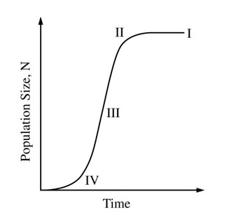

One model of a sustainable fisheries practice is
for individual fish to be removed from a natural
population at a rate equal to the highest possible
growth rate of an ideal population. The graph
above represents a population of bluefin tuna
living along the Atlantic coast. At which labeled
point in the graph is the population growth rate
the highest?
In the graph, the population's growth rate reflects logistic growth. The growth rate initially increases but levels off as the population nears its carrying capacity. The
carrying capacity is indicated by the horizontal line between II and I.
The highest growth rate occurs at III. One way to mathematically interpret growth rate is to estimate the slope, \(\dfrac{\text{Population}}{\text{Time}}\).
The slope at III is the steepest.